Best free icon sets for UI design in 2026
I’ve searched through hundreds of icon sets over the years and picked out the best free icon sets for UI design.
As a designer I’ve always loved icon design. There’s something magical about being constrained to a tiny canvas of 24 by 24 pixels. Obviously, many other designers feel the same, as they’re spending hundreds of hours crafting beautiful free icon sets for us to use in our website and app projects.
We’re really lucky to have so many icon sets to choose from, but it can be tricky and time consuming to find a high quality icon set that meets your needs. I’ve searched through hundreds of icon sets over the years and picked out the best free icon sets for UI design. They’re all completely free to use in both personal and commercial projects, which is pretty amazing if you ask me. This means that you can use them in your design system too.
I’ve also summarised the features of each icon set to make them faster and easier to compare. At a glance you can see the number of icons, icon styles, file formats, development libraries, and customisation options. Let’s learn a little bit about icons before comparing my top free icon sets.
What is an icon set?
An icon is a small, simple visual representation of an idea, action, or object. In UI design, icons are used to help users quickly find and recognise elements. For example, a trash can icon generally represents “delete,” and a magnifying glass icon represents “search.”
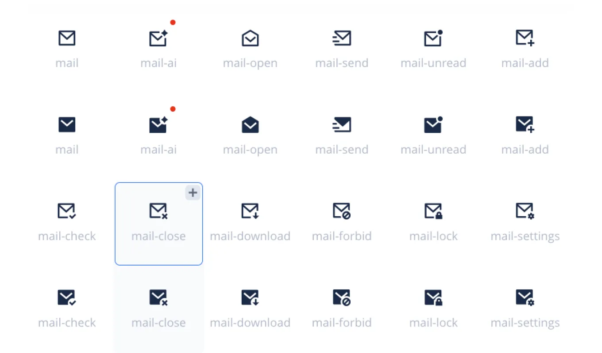
An icon set is a collection of icons designed in a consistent style. Icon sets help maintain design consistency across digital products by providing a unified visual language. They are often used in design systems across web and app design to simplify navigation and make interfaces more intuitive and user-friendly. Designers can select icons from the set to match their needs, ensuring the visual style and meaning remain cohesive throughout the project.
What makes a high quality free icon set?
Here’s a quick breakdown of what to look for when choosing an icon set for your project.
Clarity and simplicity
Effective icons communicate their meaning instantly and clearly. Simplicity is key, each icon should represent its function or concept without unnecessary detail. Each icon in the set should use universally recognized symbols or follow familiar visual conventions. This helps ensure that users can quickly understand the icons’ meanings even without a text label.
Some icon sets will reduce visual complexity as the size of the icon decreases. This means they’ll have separate sets of icon designs for different sized icons.
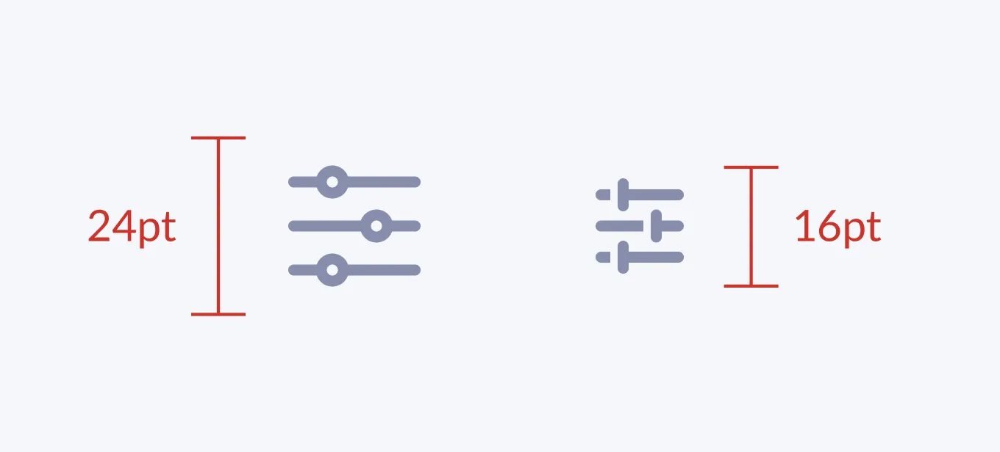
Sufficient number of icons
Most icons sets contain a few hundred of the most common universal icons, so they should meet your needs for most projects. There’s generally no need for huge icon sets with thousands of icons, as recognition of most of the icons would be low anyway. If you’re creating a specific type of app, like a music or travel app, look for icon sets that contain those types of icons. Top icon sets often organise icons into categories to make it easy to check what’s on offer. You can always modify existing icons to meet your needs too, or even create your own to add to the set.
Icons should look consistent
A strong icon set maintains a consistent style throughout, including uniform line thickness, shapes, curves, and proportions. Consistency ensures that the icons look cohesive together, creating a polished and professional design. Whether the style is flat, outlined, or filled, it should remain the same across all icons.
Icons should come in a range of file formats
Look for icon sets that come in a range of file formats. SVG and Figma formats are best. PNG files are less flexible, as they’re not vector images and can’t be resized without pixelation.
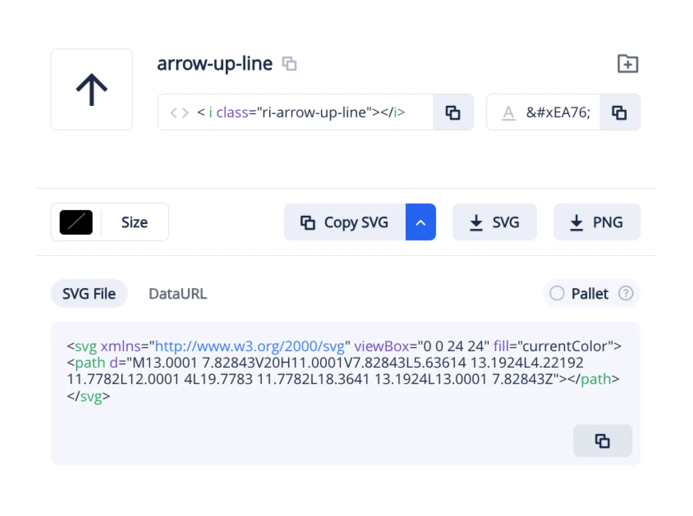
Some icon sets also support development libraries like React, Vue, and other JavaScript frameworks. These libraries allow you to quickly import and use icons in your code, making them easy to manage and customise within your app. Free icon sets don’t often support many development libraries, but luckily I’ve found some amazing ones that do.
Other icon sets are also available as icon fonts. Icon fonts turn icons into font characters, allowing you to use them in websites similarly to text. This makes them easy to customise with CSS and simple to integrate in your website code.
Icons should be easy to find
With so many icons it can be hard to find the one you’re after. Some free icon sets have a website with search functionality which makes it a lot faster to find what you need. Some also provide a Figma plugin where you can quickly search for the icon you’re after and insert it into Figma in seconds.
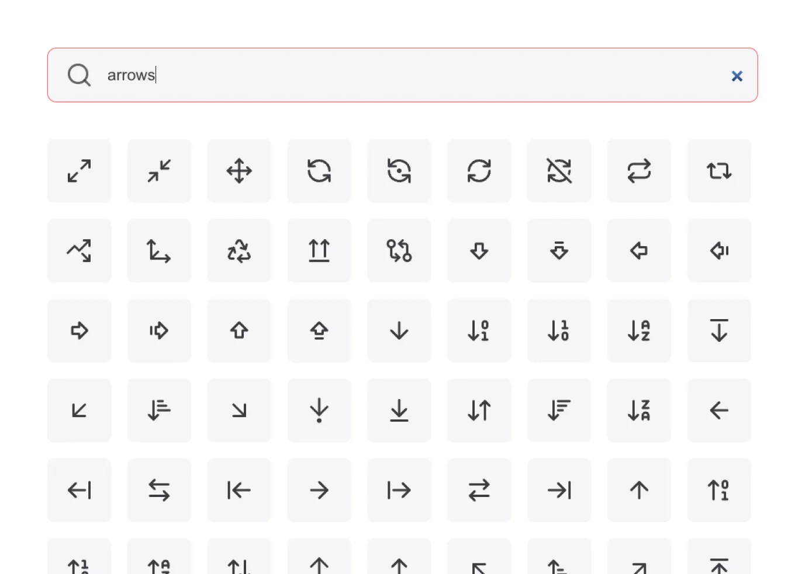
Icons should be easily customisable
Icon sets that allow customization, such as changing colours, stroke width, or fills, offer more flexibility. Designers often need to tailor icons to match their brand or style, so having an adaptable set can be a major advantage. Most free icon sets come in both a line and a fill style.
Additional extras to look out for
There are a few extra things that make an icon set faster and easier to use. Being able to copy an icon from the icon set’s website to your clipboard makes it faster to paste it into your design in Figma. Being able to filter by categories is also handy. A Figma plugin where you can search for the icon you’re after and insert it into your design is even better. These are big asks for free icon sets, but many of the icon sets in this list have these features.
UX design guidelines for using icons
Before we start comparing free icon sets, let’s go through some quick UX design guidelines to help ensure that we’re using icons correctly. If you’re looking to learn more about UI design, check out 16 little UI design tips that make a big impact.
Use common symbols to help ensure recognition
Icons should be instantly recognisable and convey a clear meaning. Avoid using overly abstract or complex icons that might confuse users. It’s safest to use common icons that most people are familiar with. These are sometimes called “universal icons”, as they’re universally understood by most people.
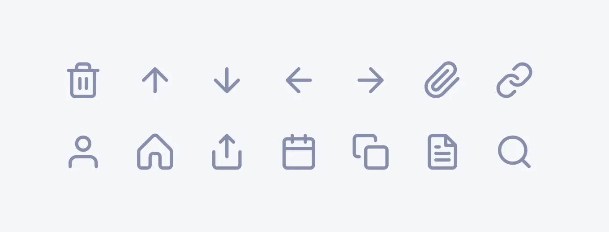
If an icon’s meaning isn’t obvious, don’t use it, or consider pairing it with a text label to improve clarity. If you’re unsure, conduct usability testing with your target audience. Even commonly used icons can have different interpretations across cultures.
Maintain consistency across icons
Use a consistent style for icons throughout the interface. This includes matching line thickness, colour, border radius, and size. A uniform icon style helps create a cohesive visual language and improves user familiarity. If you choose a high quality icon set, you won’t need to worry about maintaining consistency.
Try to pair icons with text
No matter how common a particular icon is, there’s a risk that its meaning may not be immediately clear. Adding a text label can help ensure the meaning of an icon is clear. This is particularly important for complex actions or less common icons. If there are space constraints on the interface, it’s ok to use an icon without text, as long as the icon’s meaning is commonly understood by users.
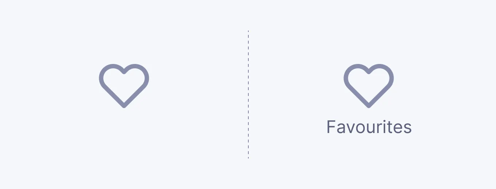
Use icons purposefully
Like I say in my Practical UI design book, every detail on an interface should earn its place by having a logical purpose behind it. Icons are no different. Not every action on an interface needs an icon. Too many icons can overwhelm users or make it difficult to focus on key actions.
Ensure icons have sufficient contrast
Contrast is a measure of the difference in perceived brightness between two colours. It’s expressed as a ratio ranging from 1:1 to 21:1. For example, black text on a black background has the lowest 1:1 contrast ratio, whereas black text on a white background has the highest 21:1 ratio. There are many online tools to help you measure contrast ratios between different colours.
In order to help ensure that people with low vision can clearly see interface details, like icons, aim to at least meet Web Content Accessibility Guidelines (WCAG) 2.1 level AA colour contrast requirements. User interface elements that convey information, like icons, require a minimum contrast ratio of 3:1.
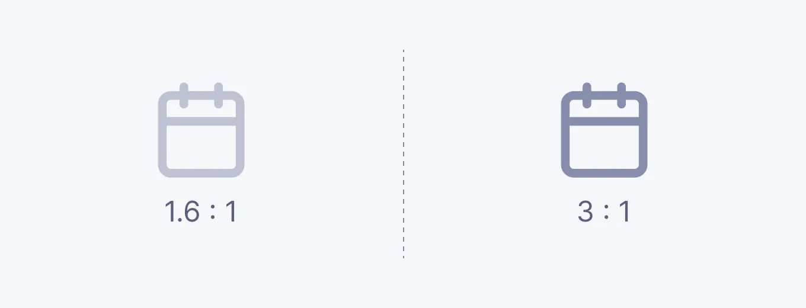
Avoid visually complex icons
Since icons are generally very small in size, typically 24px by 24px, it’s important to keep them simple and minimal to improve legibility. For very small icons, like 16px by 16px, reduce their visual complexity even further. Well designed icons sets will automatically reduce visual complexity as the size of the icon decreases. Only one of the free icon sets in this article offers this level of detail, Heroicons by the Tailwind CSS team.
Ensure icon touch targets are sufficient
Small targets are more difficult to click or touch than large ones. This is especially true for those with impaired motor control, or even someone holding their phone with one hand and using their thumb.
If you’re using icons as interactive buttons, try to stick to the following guidelines to ensure they have a sufficient target size:
- Make buttons at least 48pt by 48pt in size. This aligns with an 8pt grid and is slightly larger than the WCAG recommendation of 44pt by 44pt.
- Make frequently used buttons even larger to improve efficiency and to help avoid them being missed.
- Separate buttons by at least 8pt to help prevent people mistakenly pressing the wrong one.
Ensure icons match your brand
Icons come in a range of styles to suit different aesthetics. Some have rounded corners for a relaxed and friendly vibe, while others are sharper for a more serious feel. Depending on your brand vibe, make sure you choose an icon set that suits your brand. The free icon sets in this article come in a range of different aesthetic styles, from soft and round to sharp and angular.
Some icon sets allow you to alter the corner radius and border thickness, making them especially suitable for a range of different brands. Other icon sets have a neutral look and feel which should also work well for most brands.
3 best free icon sets
With so many icon sets to choose from, it’s hard to find the best icon set for your web or app project. I’ve searched through hundreds of icon sets over the years and picked out the best free icon sets for UI design. The top 3 icon sets are all beautifully crafted, have a large number of icons, many file formats, support popular front end development libraries, and offer flexible customisation options.
Phosphor icon set
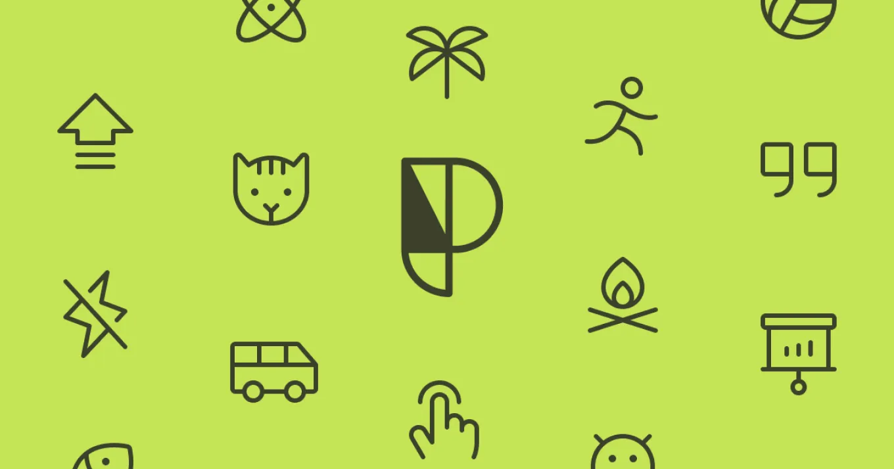
| Number of icons: | 1,248 |
| Styles: | Line, fill, duotone |
| File formats: | SVG, Figma |
| Code libraries: | Web, React, Vue, Flutter, Elm, Swift |
| Figma plugin: | Yes |
| Search functionality: | Yes |
| Customisation options: | Size, stroke width, colour |
Phosphor is my favourite free icon set for many reasons. As soon as you land on the website, you can clearly see the high quality and attention to detail. The creators, Helena Zhang and Tobias Fried, did an amazing job crafting each and every icon.
Because they designed the icons at 16px by 16px, rather than the conventional 24px by 24px, the icons are highly legible at small sizes. With over a thousand icons to choose from, you’re sure to have everything you need for most website and app projects. There are lots of handy customisation options too, including size, stroke width, and colour, which makes this free icon set especially flexible for different brand aesthetics.
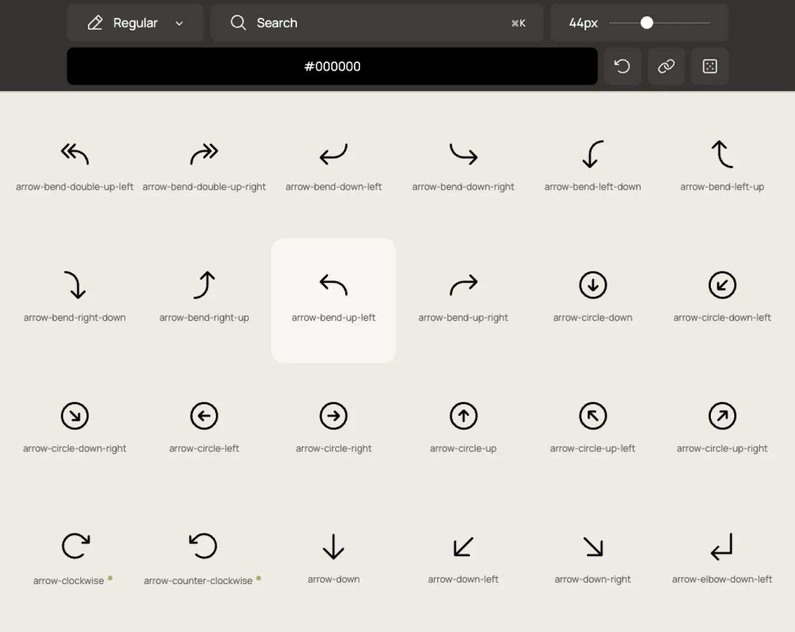
Along with the usual SVG format, there’s also a Figma file that you can add to your design system. By the way, if you’re having trouble building your design system, I’ve written a free guide on how to build a design system. Phosphor also has a Figma plugin that allows you to quickly search and pull in icons into your Figma files as needed. Last but not least, this amazing icon set comes in a bunch of different code libraries, including web, React, Vue, Flutter, Elm, and Swift. All in all, a beautifully crafted, easy to use, and feature rich icon set. Honestly, it’s crazy that it’s completely free.
Tabler icon set
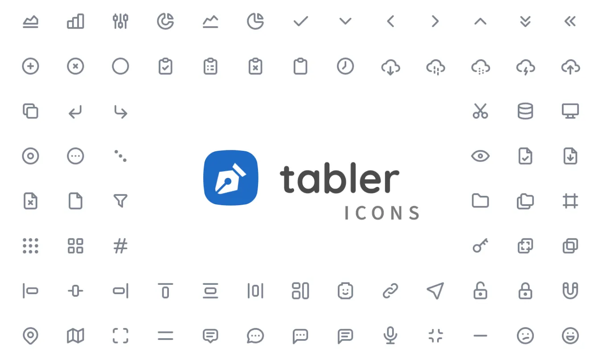
| Number of icons: | 5,664 |
| Styles: | Line, fill |
| File formats: | SVG, Figma |
| Code libraries: | Web font, React, Vue, Angular, Svelte |
| Figma plugin: | Yes |
| Search functionality: | Yes |
| Customisation options: | Size, stroke width, colour |
Most paid icon sets don’t provide nearly as much value as the Tabler icon set. Created and maintained by Pawel Kuna along with a bunch of keen contributors, this huge open source icon set of over 5,000 icons is beautifully crafted and full of handy features.
Icons are designed on a 24px by 24px grid with a 2px stroke weight. The icon style is neutral and modern with curved corners and sharp ends. They come in both a line and fill style and can be customised by size, stroke width, and colour. This makes them super flexible for just about any website or app project you’re working on.
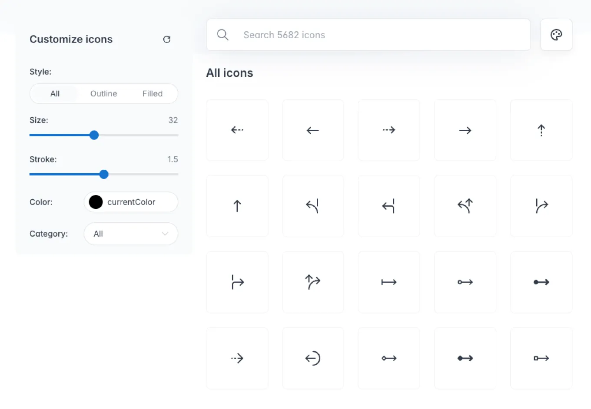
Developers will also love this icon set, as there are libraries for most front end frameworks. This makes it really quick and easy to install the icon library and use them in your code immediately. There’s also a Figma plugin to help speed up designer’s workflows. I’ve put together a list of my top Figma plugins for web design if you’re interested. We’re so lucky to have access to such great free icon sets.
Lucide icon set
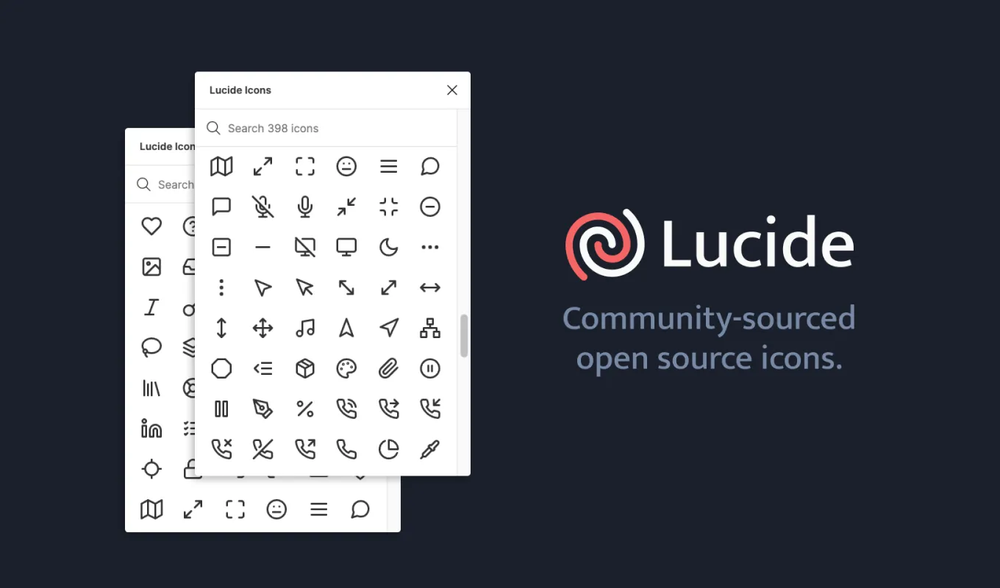
| Number of icons: | 1,532 |
| Styles: | Line |
| File formats: | SVG |
| Code libraries: | Web, React, React Native, Vue, Vue 3, Svelte, Preact, Solid, Angular, NodeJS, Flutter |
| Figma plugin: | Yes |
| Search functionality: | Yes |
| Customisation options: | Size, stroke width, colour |
While the Lucide icon set isn’t the biggest, what they lack in size is made up for with their focus on quality. One of the main reasons behind the quality of this beautiful minimal icon set is the fact that it was based on the father of all free icon sets, Feather icons, created by Cole Bemis.
Since the Feather icon set is no longer actively maintained, the Lucide team, along with their community of contributors, is actively building on and improving this beautiful minimalist icon set. They’ve cleverly created icon design guidelines based on the original Feather icons style, to help ensure quality and consistency across the community of contributors.
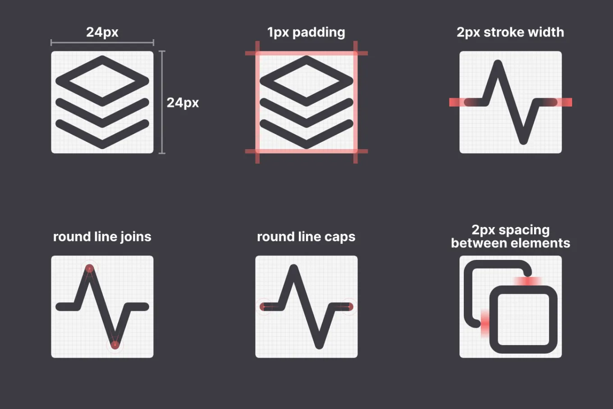
While this open source icon set only comes in a line icon style, you can still create filled versions of most icons if needed. There’s also a handy style customiser that allows you to adjust colour, stroke width, and size. There’s even an option to fix the stroke width regardless of the icon size. The search and category filter are also super handy to help find the icons you’re looking for.
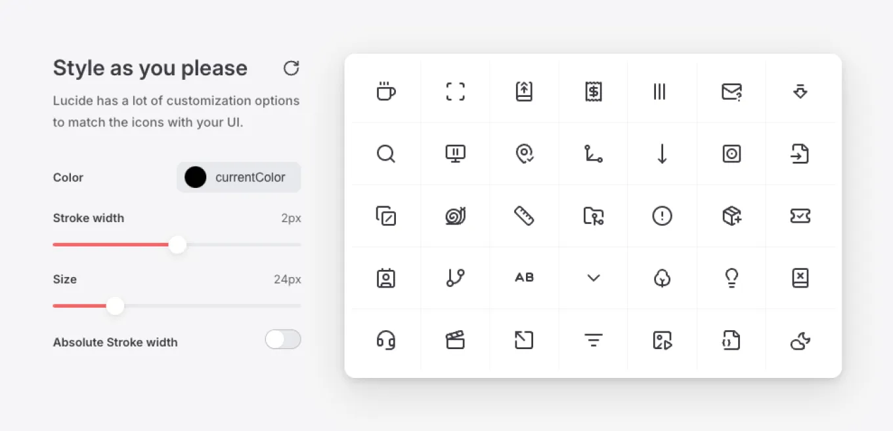
Heaps of development library packages are available to make it quick and easy to integrate Lucide icons into your development project. They include Web, React, React Native, Vue, Vue 3, Svelte, Preact, Solid, Angular, NodeJS, and Flutter. I love that the Lucide community is driven to expand the Feather icon set while remaining true to the original minimalist design language. Looking forward to seeing this classic icon set grow further.
Other great free icon sets
Perhaps you don’t need all the bells and whistles of the top 3 icon sets? Or maybe you’re looking for a different aesthetic? I’ve put together a list of some of my other favourite icon sets. They may not be as big or feature rich as the top 3, but if you’re looking for quality, not quantity, it’s definitely worth checking out the following high quality free icon sets.
Iconoir icon set
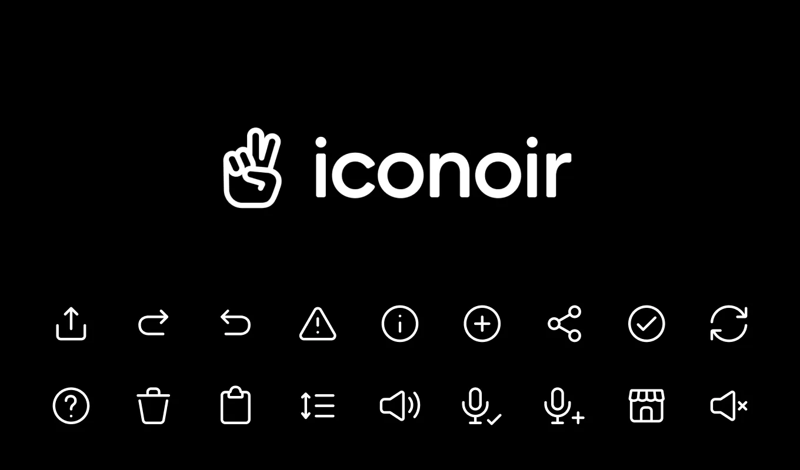
| Number of icons: | 1,597 |
| Styles: | Line, fill |
| File formats: | SVG, Figma |
| Code libraries: | Icon font, React, Flutter, Framer |
| Figma plugin: | No |
| Search functionality: | Yes |
| Customisation options: | Size, stroke width, colour |
When you look at this beautiful open source icon set, you can tell that Luca Burgio put lots of love into crafting each and every detail. The icon style is minimal and modern with slightly curved edges. Both line and fill styles are available and you can customise size, stroke width, and colour easily. Available in SVG and Figma formats along with a range of development libraries, this is one of the best icon sets out there.
Remix icon set
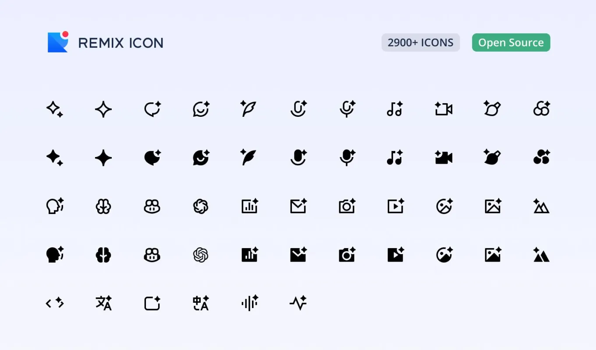
| Number of icons: | 2,983 |
| Styles: | Line, fill |
| File formats: | SVG |
| Code libraries: | Icon font, React, Vue |
| Figma plugin: | Yes |
| Search functionality: | Yes |
| Customisation options: | Size, colour |
Most icon sets these days have curved corners, but Jimmy Cheung and Wendy Gao have chosen to give their Remix icon set a sharper aesthetic. With close to 3,000 icons, it’s hard to believe that this pixel perfect icon set is 100% free to use for both personal and commercial use.
Super popular and regularly maintained, this icon set was designed on a 24 by 24 pixel grid in both line and fill styles. There’s a handy Figma plugin to speed up your design workflow and you can customise icon size and colour too. Remix is also super easy for developers to use, as it supports a range of development libraries.
Feather icon set
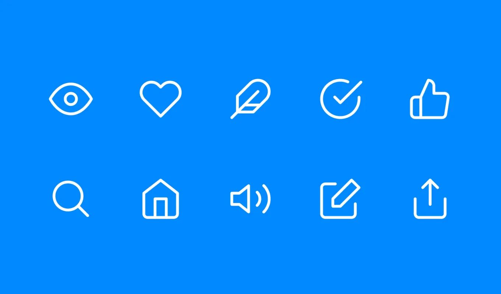
| Number of icons: | 287 |
| Styles: | Line |
| File formats: | SVG, Figma |
| Code libraries: | Many available in related projects |
| Figma plugin: | Yes |
| Search functionality: | Yes |
| Customisation options: | Size, stroke width, colour |
Feather icons are often regarded as the origin of modern icon sets. Their beautiful minimal aesthetic has made them one of the most popular icon sets of all time, so there’s a good chance you’ve already seen them in multiple websites and apps. While it’s not a particularly large icon set, it has been the inspiration for many other icons sets. The creator, Cole Bemis, should be really proud of his creation.
While Feather icons only come in a line style, you can customise their size, stroke width, and colour. There’s also a Figma file and Figma plugin available. The project itself doesn’t support many development libraries, but there are many related spin off projects that have you covered. If you’re looking for a beautiful minimal line icon set, then Feather could be for you. I liked them so much that I used them in my Practical UI Figma design system.
Heroicons icon set
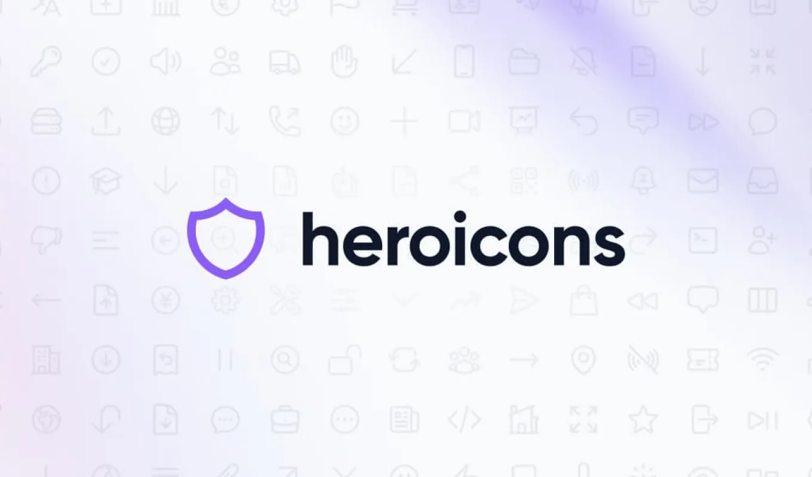
| Number of icons: | 316 |
| Styles: | Line, fill, mini, micro |
| File formats: | SVG, Figma |
| Code libraries: | React, Vue |
| Figma plugin: | No |
| Search functionality: | Yes |
| Customisation options: | No |
Heroicons were created by the super talented Steve Schoger and the Tailwind CSS team. As with all of Steve’s products, this icon set is really high quality. Rather than simply allowing you to scale the icons to any size, like most icons sets, Heroicons have been created at specific sizes to ensure maximum clarity and legibility. If we look at the following example, you can see that the level of visual detail in the icon decreases as it gets smaller. This level of detail is rarely seen in paid icon sets, let alone free icon sets.
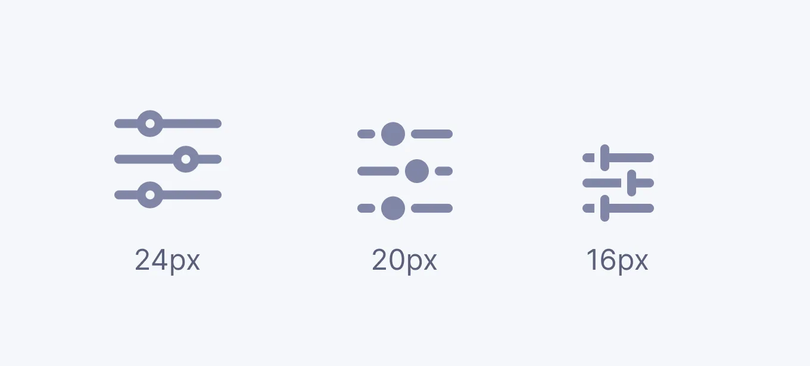
It’s not a very large icon set, but what it lacks in size it makes up for in quality. Icons come in SVG and Figma format and React and Vue development libraries are also supported.
Glyphs icon set
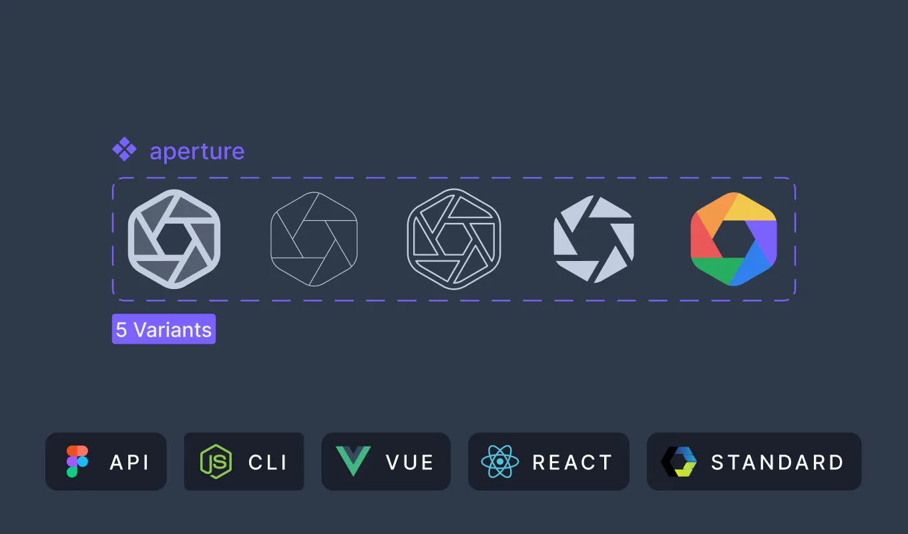
| Number of icons: | 1,215 |
| Styles: | Line, fill, colour, duotone |
| File formats: | SVG, Figma |
| Code libraries: | Web, React, Vue |
| Figma plugin: | No |
| Search functionality: | Yes |
| Customisation options: | Size, stroke width, colour |
Glyphs is a bit different to most icon sets. Not only do they offer the usual line and fill icon styles, they also offer coloured and duotone styles, which generally only come with paid icon sets. They’ve also been designed on a larger 80 by 80 pixel grid. This makes them more suitable for use at a larger size as decorative illustrative elements on landing pages and marketing websites. If you’re experiencing creative block designing your website, check out my top free web design inspiration sites.
You can tell that the creator, Goran Spasojevic, is very organised and has spent a lot of time creating the Figma file for this icon set. Icons have been created as components with variants and meticulously sorted into categories to make them easier to find. Glyphs icons are also easy to customise and support a range of development libraries. The style is on the fun and funky side, so if that’s your brand vibe, this could be the icon set for you.
Mage icon set
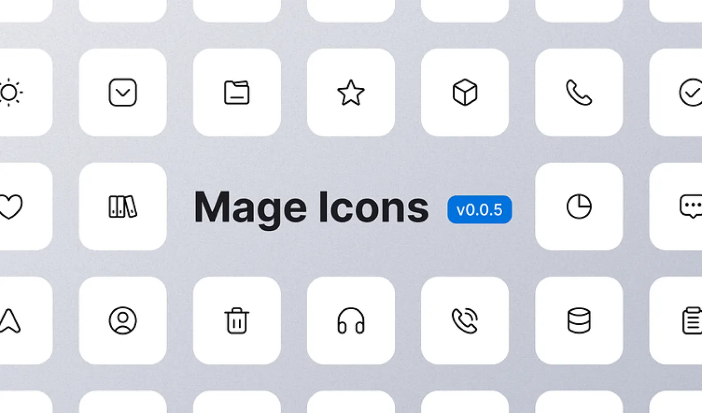
| Number of icons: | 543 |
| Styles: | Line, fill |
| File formats: | SVG, Figma |
| Code libraries: | React |
| Figma plugin: | No |
| Search functionality: | Yes |
| Customisation options: | No |
If your brand vibe is fun and friendly, Mage could be the icon set for you. Their heavily rounded aesthetic gives them a much softer vibe than most other icon sets. They come in line and fill styles and also come with a handy bunch of popular brand icons. There’s currently a React library for developers and the creators, Nischal Kharel and Prayush Bijukchhe, are planning on expanding this offering in the future.
CSS*GG icon set
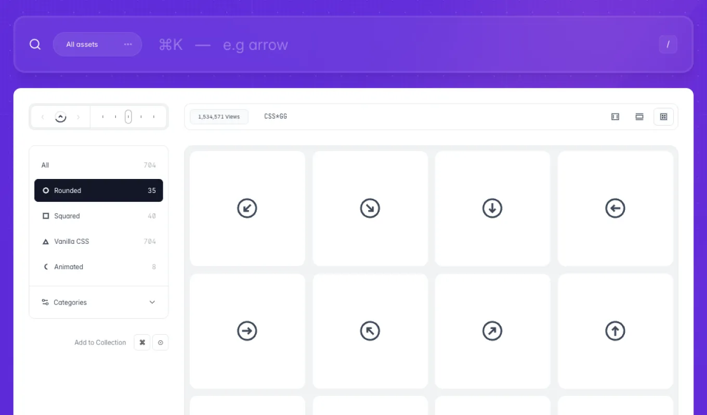
| Number of icons: | 704 |
| Styles: | Line |
| File formats: | SVG, Figma |
| Code libraries: | CSS |
| Figma plugin: | No |
| Search functionality: | Yes |
| Customisation options: | No |
This free, modern icon set features over 700 open-source, CSS-friendly icons perfect for web and app design. The icons are lightweight and fully customizable with CSS, making them easy to style and animate. Created by Astrit Malsija, this icon set includes a variety of popular icons organised across multiple categories. The set mostly consists of line icons, although some include solid elements too.
Ionicons icon set
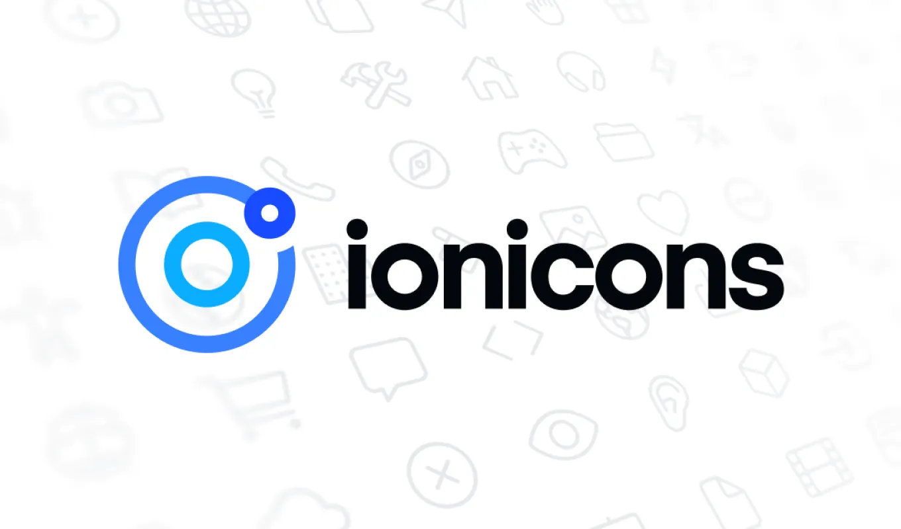
| Number of icons: | 1,300 |
| Styles: | Line, fill, sharp |
| File formats: | SVG |
| Code libraries: | Ionic Framework |
| Figma plugin: | No |
| Search functionality: | Yes |
| Customisation options: | No |
Ionicons is an open-source icon set developed by the Ionic team, featuring 1,300 icons designed to complement modern web and mobile interfaces. Originally created for Ionic Framework apps, Ionicons has grown into a versatile icon library compatible with any project. It offers icons in the usual line and fill styles, but also offers a sharp variant for those looking to move away from curved corners.
Iconsax icon set
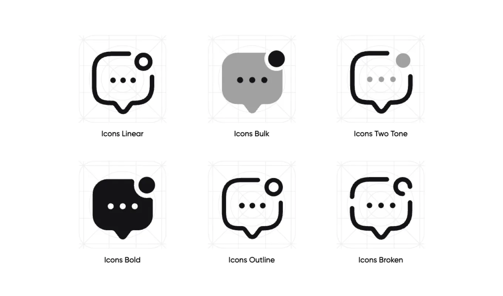
| Number of icons: | 1,000 |
| Styles: | Line, fill, duotone, broken |
| File formats: | SVG, Figma |
| Code libraries: | Vuesax Vue Framework |
| Figma plugin: | No |
| Search functionality: | No |
| Customisation options: | No |
Iconsax is a particularly versatile free icon set, as it comes in a range of different styles. This makes it easy to adapt to various design aesthetics. The icon design is soft and round giving the icons a fun and friendly vibe. While originally built for the Vuesax Vue framework, this free icon set can be used for personal and commercial use in any project. While there’s no search functionality on the website, the Figma file is neatly organised into sections and icons are labelled to make them easy to find.
Boxicons icon set
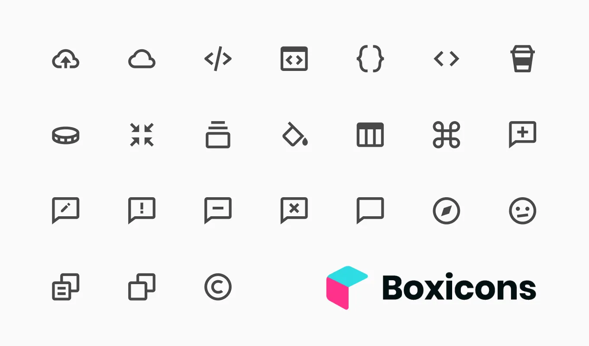
| Number of icons: | 1,634 |
| Styles: | Line, fill |
| File formats: | SVG, Figma |
| Code libraries: | CSS, Web font |
| Figma plugin: | No |
| Search functionality: | Yes |
| Customisation options: | No |
Boxicons is a lightweight and versatile icon set offering over 1,500 icons, perfect for modern web and mobile design. If their sharp, bold design reminds you of the icons from Google Material Design, it’s because they follow their official guidelines. Available in various styles, including line and fill, and logo-specific icons, this open source icon set provides flexibility to suit a range of aesthetics. The icons come in SVG and web font formats, making them easy to integrate into projects and customise with CSS for size, colour, and animations.
Sargam icon set
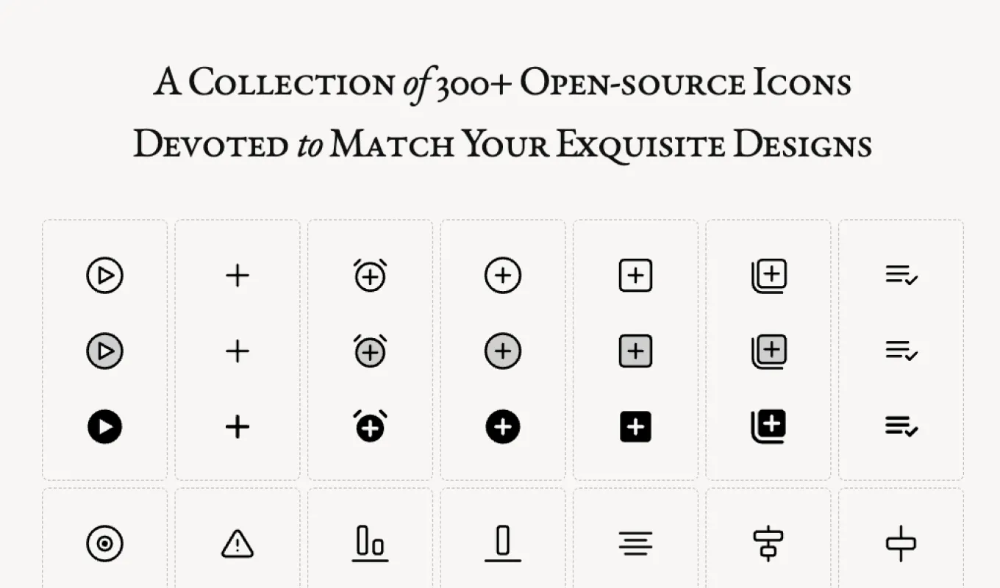
| Number of icons: | 308 |
| Styles: | Line, fill, duotone |
| File formats: | SVG, Figma |
| Code libraries: | React |
| Figma plugin: | No |
| Search functionality: | Yes |
| Customisation options: | No |
If you’re looking for a minimal retro vibe, this could be the icon set you’re looking for. Designed on a 24 by 24 pixel grid, Sargam icons work really well at a small size. Along with the usual line and fill styles, they also have a duotone style which can be a nice way to differentiate them from other icon sets. SVG’s have been optimised for better web performance and there’s also a React library and a Figma file.
Learn UI design
I hope you found my top free icon sets helpful. While icons are important, they’re just a small part of UI design. I recently wrote my own UI design book that includes everything I wish I knew when I first started out as a designer back in 2005. It’s a logic-driven approach to design intuitive, accessible, and beautiful interfaces using quick and practical design guidelines.
It contains the most important things you need to know about interface design, usability, and accessibility. It’s helped thousands around the world and has 5-star reviews, so I’d encourage you to check it out.

Need more inspiration?
I’ve searched through hundreds of different design resources over the years so you don’t have to. If you’re looking for more inspiration, I’ve also picked out my favourite free web design inspiration sites, free typefaces, Figma plugins, UI design books, and design system examples. Hope you find them helpful.